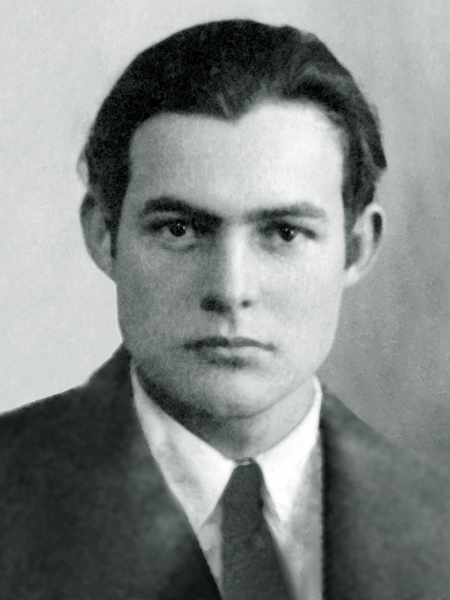

.Hemingway [1899-1961]
"Cần phải viết ra chỉ một câu thực, một câu thực nhất mà anh từng biết”. Kể từ khi đến Paris vào năm 1921, Hemingway [1899-1961] không nhằm vào cái đích nào khác. Sau đó một ít, ông nói thêm: “Người ta có thể gạch xóa đi bất cứ điều gì nếu ý thức được về cái mà mình xóa và về việc xóa đi đó tăng sức mạnh cho câu chuyện và làm cho người ta cảm thấy ngoài cái họ hiểu ra còn có một cái gì khác nữa”. Với đôi điều thôi, thế là đã đủ khi nói về Hemingway qua hai lời trích dẫn ấy. Người ta đã nói đủ thứ về những ám ảnh của ông như là tinh chất của tài năng văn học của ông. Ở đấy lộ ra sự quan tâm của ông đến sự chính xác, đến tính chân thực của quan sát, không mang chất cảm động và không bình luận. Và cả cái sở thích thường trực về việc tước bỏ đi những chữ thừa. Theo quy tắc chung: cái mà người ta lược bớt đi lại mạnh hơn rất nhiều so với việc phát triển nó ra và cái mà người ta tưởng tượng còn mạnh mẽ hơn nhiều cái mà người ta biết được.
Trong tác phẩm đầu tay ông xuất bản vào năm 1923, Ba thiên truyện và 10 bài thơ, Hemingway làm người ta nghĩ đến một truyện kể mang tên Trái mùa: Sự hồi tưởng về một chuyến nghỉ ở Cortina d’Ampezzo cùng với bà vợ đầu của ông là Hadley. Ở đấy có chuyện về một ông già say rượu là Peduzzi mon men làm quen một cặp vợ chồng trẻ người Mỹ tại khách sạn và dẫn họ đến một nơi lắm cá của con sông mặc dù có lệnh cấm đánh bắt vào mùa đó. Nhưng lão Peduzzi chỉ quấy phá. Lão không kẹp chì vào dây chăng lưới. Lão chỉ nghĩ đến việc moi tiền khách hàng để đi uống rượu. Tóm lại chuyến đánh cá bị xếp lại và tác giả nghĩ rằng chuyện đó sẽ chẳng bao giờ có thực. Chuyện chỉ có thế. Ông chẳng nói thêm gì khác trong mấy trang tiếp theo. Sự thực, lão già đã tự treo cổ vào ngày hôm sau đó. Nhưng Hemingway cố tình bỏ đi tình tiết đó.
Câu chuyện rất hay, nếu có thể nói thế. Chủ đề đã được nói lên rất rõ ràng. Khi mà những nhà văn khác có thể bịa ra sự tự tử để kết thúc thiên truyện thì Hemingway, mặc dù chứng kiến điều đó, lại bỏ qua đi. Ông đã làm cho người ta cảm nhận được sự thất vọng của nhân vật của ông. Thế là đủ, “phần bị tước bỏ tăng sức mạnh cho câu chuyện”. Chúng ta có thể nói cách khác: Hemingway là một trong số những nhà văn lớn về viết ngắn của thế kỷ này.
Thật tuyệt vời khi tên tuổi ông thường nằm trong danh sách các nhân vật được tôn vinh của thế kỷ XX. Nhưng đúng ra người ta tôn vinh điều gì ở ông? Một Hemingway huyền thoại chân đi ủng, người đi săn trong rừng rậm châu Phi, một đấu sĩ bò tót nghiệp dư, một võ sĩ quyền anh không chính ngạch, một người hay cãi lộn ở các hộp đêm, người đi câu cá kiếm ngoài khơi vùng biển Key West, một người giả vờ đóng vai gián điệp và săn lùng tàu ngầm quốc xã khi đến sống ở La Havane, hay hơn nữa một phóng viên chiến tranh đã tham gia “giải phóng” Paris và khách sạn Ritz vào tháng 8/1944, chẳng bao lâu sau, tiếp Jean-Paul Sartre và Marlene Dietrich trong căn phòng 31 nổi tiếng.
Tiểu thuyết gia này đã thành công với tác phẩm Mặt trời cũng mọc hay Giã từ vũ khí? Hẳn vậy rồi, đấy quả là những tác phẩm hay. Nhưng theo quy tắc chung, phải chăng những cuốn tiểu thuyết của Hemingway là những truyện ngắn chuyển thành một cách vụng về vì không có thì giờ để gọt cho ngắn lại? Chuông nguyện hồn ai là gần như thế. Ông già và biển cả lấy từ một truyện kể triết lý rút ra từ dòng đó. Jerome Charyn, trong một cuốn sách của một bộ sưu tập Những phát hiện dành cho nhà văn, đã không nói khác: “Ông không có được cái cảm quan sâu sắc về cấu trúc so với Faulkner. Sự thông thái của ông chỉ nằm bên trong sự chặt chẽ cô đọng của truyện ngắn mà không phải trong sự hỗn độn của một thiên tiểu thuyết”. Sự thực đấy là một nhà văn ưa sự ngắn gọn, tiết kiệm ngôn từ đến mức tối đa, chỉ đưa ra những chi tiết và đôi khi gây ra một cảm giác bất ngờ về thiên nhiên (ông từng nói: “Viết về đồng quê theo cách mà Cézanne đã vẽ trong những bức tranh của ông”). Chính là cái chất Hemingway đó mà người ta muốn tôn vinh, và ngày nay còn đọc đi đọc lại với sự thán phục sững sờ.
Khi nói đến Hemingway, người ta liên tưởng đến Scott Fitzgerald (người mà ông đã vẽ ra một bức chân dung chính xác nhất trong Paris là một hội hè). Lý do càng mạnh hơn khi nói đến những truyện ngắn của họ. Thiên tiểu thuyết đầu tiên Mặt trái của Thiên đường làm cho Fitzgerald nổi tiếng sau một đêm vào năm 1920. Nhưng chính những truyện ngắn ông viết ra dài dài sau đó và bán cho các tạp chí Mỹ với giá vàng là cái mà ông kiếm sống. Hemingway khởi đầu với những tập truyện ngắn, đặc biệt là cuốn Về thời buổi này năm 1924. Nhưng chính thiên tiểu thuyết đầu tiên Mặt trời vẫn mọc năm 1926 và những cuốn tiếp đó mang lại vinh quang và phương tiện sống cho ông. Những truyện ngắn của Fitzgerald giống như những thiên tiểu thuyết nhỏ có hàng đống nhân vật và một kết thúc thật tuyệt vời. Ông không ngần ngại chiều theo thị hiếu độc giả và những tạp chí đặt hàng ông. Những tiểu thuyết của Hemingway, như người ta nói, nhiều khi là những truyện ngắn kéo dài, nhưng trong những truyện ngắn gọn trong đó hành động được giản lược thành đồ thức, ông không hề nhân nhượng một chút nào. Ở đấy sự toàn vẹn nghệ thuật của ông đạt tới đỉnh cao. Ông từng nói: “Tôi thử sức mình trong nghề văn bằng những sự việc đơn giản nhất, cái đơn giản hơn hết và cái cơ bản nhất là cái chết tàn khốc”. Những cái đơn giản nhất ư? Còn hơn thế. Người đọc bối rối từ truyện này đến truyện khác vì lao động của nhà văn, sự sáng tạo của ông, cái cảm quan về việc dùng từ thật đắt và thật đúng chỗ. Và cả cái tài về đối thoại làm cô lại thực tại một cảnh huống. Truyện 50.000 USD hay Những kẻ giết người chính là những mẩu chuyện mẫu mực. Những truyện ngắn về Nick Adams, hóa thân của ông, là sự trong suốt đến tàn nhẫn và xé lòng người. Cứ mỗi bận Hemingway lại lột trần ông ra ngay cả khi ông tạo ra những tác phẩm hư cấu. Ông nói: “Thứ văn chương đáng giá nhất là cái mà người ta sáng tạo ra, tưởng tượng ra. Cái làm cho sự việc trở nên thật”. Ông cũng thú nhận thích thú của ông về chủ nghĩa anh hùng hay nỗi sợ hãi đối với sự lừa biếng, sự ám ảnh về việc tự tử hay những hành vi mang tính tự sát, những dũng sĩ đấu bò của ông tiến ra trước cặp sừng của những con bò mộng, những võ sĩ quyền Anh trước nguy cơ bị “nốc ao”, những người lính của ông trước họng súng liên thanh của kẻ thù và những chàng trai xấu số trước những kẻ giết người bằng hơi độc. Hơn nữa, ông thú nhận sự thán phục của mình trước một ngọn đồi ở Michigan, màu xanh óng ánh của con cá hương trên sông…
Hemingway huyền thoại mang trong bản thân ông, cho đến lúc chịu những suy thoái cuối cùng, chứng mê sảng, chứng mất ngủ hay nỗi sợ về sự bất lực, một cái gì đó quá lớn lao, quá phì nhiêu, quá kịch tính. Ngược lại chàng Hemingway lúc trẻ thì bảo tồn một cái gì đó khô khan. Hơn thế, ông viết với một phong cách khô khan. Và đấy là cái khiến ông trở thành vĩ đại nhất. Một mẫu mực của văn học.
TRĂM NĂM CÔ ĐƠN VỚI NGÒI BÚT
Quay về từ lò lửa chiến tranh, Hemingway đã trả giá đắt cho sự tồn tại nếu không phải là ý thức được nó ít ra một cách sáng suốt. Cái cách phòng ngự tốt nhất để chống lại sự hư vô và mọi “ảo tưởng trữ tình” về cuộc sống mà ông tìm thấy là trong công việc cô đơn của nhà văn.
Ở Key West, từ năm 1928, Hemingway đã ly khai với xã hội Mỹ. Ông chạy trốn một đất nước bị chao đảo bởi sự cấm đoán chống cộng và nạn nhân của suy thoái. Ngược lại với William Faulkner, cắm rễ vào vùng sâu của miền Nam, ông đã khước từ việc đồng nhất mình với đất nước sinh ra mình. Thực tế cho đến khi chết ông sống tại Finca Vigia, rất gần La Havane (Cuba) đằng sau dãy tường cao màu trắng, trong một ngôi nhà không có quạt máy mà cũng chả có máy điều hòa nhiệt độ. Chính ở đây ông đã viết ra phần lớn những tác phẩm của mình. Tờ Paris Review kể lại: “Từ sáng sớm, ông thức dậy, đứng trước bàn viết, tập trung tư tưởng đến cao độ. Ông chỉ đổi chân khi mỏi vì trọng lượng cơ thể dồn quá lâu lên một chân, mồ hôi tháo ra khi cảm hứng về nghệ thuật nhất thời bị mất đi và cam lòng làm nô lệ cho thứ kỷ luật tự áp đặt cho mình và tuân thủ cho đến giữa trưa”.
Cần nhắc lại rằng Hemingway là một nhà văn. Trong 7 tháng (kể từ tháng 4/1917) mà ông sống tại tòa soạn tờ Star ở Kansas City là những ngày tháng tạo dựng nên ngòi bút của ông: Ông hình thành và xác lập ra văn phong, nghệ thuật viết văn và toàn bộ cuộc sống của mình. Việc trải qua nghề báo đã thuyết phục ông rằng ngôn ngữ trần thuật có lẽ rất gần gũi với ông, cái kiểu nói lóng. Văn chương của ông, rất chặt chẽ, là sự gặp gỡ của hai khuynh hướng lớn của văn học Mỹ: Chủ nghĩa tự nhiên và chủ nghĩa tượng trưng. Quả vậy, ông gạt bỏ sự che đậy, cái mà qua nghề báo ông cảm thấy là cần thiết. Khi 35 tuổi, ông đăng trên tờ Esquire một bài báo nêu lên cho chúng ta một bài học viết văn thật tuyệt vời: “Cái khó nhất ở đời là viết ra một câu văn hoàn toàn chân thật về những con người. Trước hết phải nắm được chủ đề, rồi biết cách viết ra”. Hemingway còn nói: “Công việc này đòi hỏi sự dâng hiến hoàn toàn giống như nghề một giáo sĩ”. Đối với ông, viết văn là một công việc cụ thể, thuộc về thể chất. Ông viết chậm và khó khăn. Ngày qua ngày, tháng hết tháng, ông dậy từ rạng sáng, đọc lại những trang viết ra ngày hôm trước, chữa lại chỗ này, chỗ kia rồi viết tiếp, bắt đầu từ câu cuối, chữ cuối và cỗ máy được khởi động lại. Với ông, viết lách bao giờ cũng nguy hiểm và không hề hoàn tất. Ông đã viết lại 32 lần những trang cuối của cuốn Giã từ vũ khí và đã sửa chữa khoảng 30 lần trên bản in thử! Những bản thảo của ông chỉ ra sự quan tâm kỹ càng của ông đối với những gì ông sửa chữa, gạch xóa, kiểm duyệt hay cắt bỏ. Ông nói: “Tôi muốn tước bỏ ngôn từ để bóc trần nó ra cho đến tận xương”. Đối với Hemingway viết lách chính là phân biệt với cái chết. Viết là cách để phá vỡ sự cô đơn. Ông viết giống như không phải vì ông có thể viết và muốn viết mà vì cần phải viết. Ông lắng nghe con quái vật trong người mình. Ông mời mọc chúng ta chia sẻ những trực giác của mình, những cảm quan của mình về cuộc đời. Ông để cho những trang viết tự nhân lên, chiếm lĩnh lấy ông. Ông biến việc viết lách thành công việc lao dịch chính và là niềm vui sảng khoái nhất.
Người ta đã biết rằng đối với Hemingway, viết lách là công việc nghiêm chỉnh. Người ta chỉ được viết về những gì mình hiểu và bao giờ cũng phải chân thực. Những trích dẫn của Hemingway về “sự chân thực ban đầu” thì có đến hàng trang, những sự chân thực chưa phải là sự thực. Nhà văn là chân thực khi họ nói lên từ thâm tâm mình và thế giới tinh thần của nhà văn có thể là một bí mật lộn xộn đáng kể, một sự hỗn độn. Hemingway đã áp dụng vào văn chương cái ước nguyện mà nhà văn Anh Kipling đã khuôn đúc nên: “Trước hết là thu thập sự kiện và làm biến dạng chúng theo ý của mình”, nhưng ông còn thêm vào đấy một kích thước riêng cho mình: Kiểm tra lại chúng từ thực tế. Trong thứ văn học này, thứ văn học tìm kiếm sự cứu rỗi trong sự hoàn mỹ, mà theo Hemingway “sự thanh bạch của nhà văn cũng giống như trinh tiết một cô gái. Nếu mất nó đi thì không thể tìm lại được”. Cần phải tìm hiểu Hemingway từ một góc độ khác của huyền thoại ông, đằng sau những dòng suối rượu Whisky và Scott của Floridita, những cú đấm của Bodegita del Medio và đằng sau những buổi tối hẹn hò với Ingrid Bergman và Ordonez, đằng sau những ván chọi gà và môn bóng chày. Rồi đằng sau biển cả, trò săn bắn và cả chiến tranh. Hemingway thuộc về cái mà người ta có thể gọi là dòng nhà văn nam tính. Nhưng tất cả cái đó chỉ là chiếc mặt nạ và sự đau đớn. Từ đáy sâu, môn quyền Anh hay tình yêu bạo lực nói lên một triết lý. Thay vì húc mạnh, tốt hơn là có thể chịu đòn mà không van vỉ. Đấy là người đấu sĩ bị thương trên trường đấu trong Chuông nguyện hồn ai, đấy là người võ sĩ quyền Anh nhà nghề giỏi chịu đòn và có thể để mất một trận đấu lừa gạt, đấy là một người đi câu tóm được một con cá tuyệt vời và để mất nó đi. Trong bạo lực, người ta học được sự thất bại. Hemingway từng nói: “Cả thiên hạ đều ở trên võ đài. Người ta chỉ tồn tại khi tung ra những nắm đấm. Tự mình tôi đã đấu đá cho đến ngày cuối và cái ngày đó tôi lại tự đánh mình để chấp nhận cái chết, như là một cái gì đẹp đẽ, cái đẹp giống như người ta từng thấy từ chủ nhật này đến chủ nhật khác trên đấu trường”.
Bỗng chốc tất cả đều trở nên rõ ràng. Huyền thoại về sức mạnh cơ thể vô địch chỉ là một thứ đánh lừa mà đằng sau nó là một Hemingway khắc kỷ: Sự chiến thắng trong thất bại. Cái con người mà những dân sơn dã ở Vorarlberg mệnh danh là “Chúa Christ, kẻ uống rượu anh đào” là một con người bị tổn thương. Tất cả cũng giống như bạo lực hay rượu, chỉ là một thứ che đậy. Để phục vụ cho truyền thuyết, chiếc mặt nạ đó che chở cho Hemingway và tham gia vào những đồ hóa trang của người săn thú rừng, của phóng viên chiến tranh, của người đi câu những quái vật dưới biển, của thứ nội tạng không biết chán, một tượng đài đầy nam tính, những cái đã che giấu ông nhưng lại khiến ông phàn nàn: “Tôi muốn được thừa nhận là nhà văn mà không phải là một con người tham gia nhiều cuộc chiến tranh và càng không phải là một võ sĩ quyền Anh hay một kẻ đi săn, một dân đi biển hay một kẻ nát rượu. Tôi chỉ thích là một nhà văn và được nhìn nhận như vậy”.
Đấy là điều mà chúng ta ghi nhớ, rằng Hemingway là một nhà văn. Ở tuổi 50, ông kể lại với một nhà báo rằng sự e thẹn của ông vẫn không suy suyển. Là một đứa bé sinh ra ở một khu ngoại ô của Chicago, ông có chiếc cần câu cá từ khi lên 3, có chiếc súng săn cỡ nòng 20 vào năm 11 tuổi và sau đó suốt đời tìm kiếm lại cái thiên đường đã mất của những chuyến đi săn dọc bờ hồ Wallon với cha mình, mảnh đất của bộ tộc da đỏ Ojibway, và đã trở thành thế giới huyền thoại của ông. Có cái gì người ta không nói về ông? Rằng ông thách đấu súng với một kẻ đã nhục mạ ngôi sao Ava Gardner, rằng ông đã cứu nhà văn Dos Passos thoát khỏi bộ sừng một con bò tót ở xứ Andalousie, rằng ông đã giải phóng khách sạn Ritz ở Paris khi cầm đầu một đội quân đánh thuê, rằng ông đã đầu têu cho cái trò mất dạy “Tàu thủy, nhậu nhẹt, nhà thổ, dê đực…” Hemingway chính là mặt trái của huyền thoại về ông. Ông là nhà văn, người không ngớt tuyên bố: “Tôi thích người ta phân tích tác phẩm của tôi hơn là gặm nhấm đời tư của mình”. Evelyn Waugh, người có bộ răng cứng, nhưng đã tìm ra những lời đúng: “Đằng sau những sự phách lối, những lời nguyền rủa, những nắm đấm, đã lộ ra một ý nghĩa cơ bản của tinh thần hiệp sĩ: Sự kính trọng phụ nữ, bênh vực kẻ yếu và ý thức danh dự”. Những kẻ dèm pha ông đã tìm thấy ở ông một cái gì đó không thể khoan dung: Vấn đề đạo đức. 40 năm sau khi ông mất, không phải bao giờ người ta cũng tha thứ cho ông về chuyện đó.
Về cái chết của ông, một người bạn của ông, Aaron E.Hotchner, một nhà văn, đã kể lại những ngày cuối cùng của Hemingway và về lý do ông muốn chấm dứt cuộc đời. Hotchner nói: “Người ta thực sự không thể trả lời câu hỏi này. Bởi lẽ không thể tách rời tình thế khách quan ra khỏi tâm trạng của ông lúc bấy giờ. Một trong những yếu tố quan trọng là một loạt những cú chạy điện trị liệu đối với ông. Lúc bấy giờ, việc ứng dụng môn trị liệu bằng chạy điện còn rất sơ khai, tôi không hiểu là những nhân viên kỹ thuật thực hành chuyện đó có thật nắm vững hay không”. Đấy là một hàng thịt về mặt tâm thần. Nhưng những năm kinh hoàng nhất là những yếu tố cuối cùng. Sức sống đã lìa bỏ ông. Và ông có những toan tính tự tử. Ông có ý định nhảy xuống từ máy bay rồi ngay sau đó lợi dụng việc bạn bè cho là ông đang ngủ say đã lại định nhảy ra cửa sổ trên cùng chiếc máy bay đó. Ông thường bảo: “Những người Tây Ban Nha hiểu rằng người ta phải sống cuộc đời mình và khi không còn tìm thấy niềm vui sống thì cần chấm dứt đi”. Đấy là điều mà Hemingway đã làm.